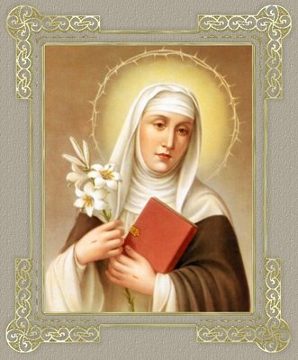
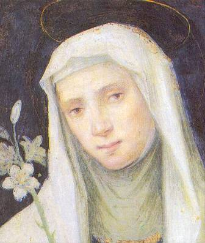

“NASCENDO PARA A VIDAâ€
INFÂNCIA E FAMÃLIA
Catarina
nasceu em Fontebranda, um bairro da cidade de Sena, na Itália, em 1347 e foi
batizada na Paróquia de São Pelegrino. Na verdade, a data exata de seu 
Catarina era a vigésima terceira filha de uma famÃlia com vinte e cinco irmãos. Giovanna, sua irmã gêmea morreu logo após o nascimento.
A fundação da cidade de Sena remonta ao inÃcio da era romana, e apesar de possuir uma população trabalhadora e progressista, não foi poupada pela epidemia de peste negra que devastou a Europa em 1348, espalhando terror e morte em todas as regiões.
O seu hagiógrafo e Confessor Frei Raimundo de Cápua descreve-nos a primeira infância de Catarina de Iacopo de Benincasa, afirmando que desde tenra idade, ela se comportava de um modo diferente das outras crianças, pois era mais bem comportada, e desde cedo aprendeu a falar o nome de DEUS e a olhar para o Céu.
PRIMEIRA VISÃO
Tinha seis anos de idade, quando em companhia de seu irmão Stefano, voltava de uma visita a casa de sua irmã Bonaventura, que residia próximo a porta de Sant’Ansano no muro que protegia a cidade, teve uma inesquecÃvel visão. As duas crianças subiam a ladeira conhecida pelo nome de “Valle Piattaâ€, hoje denominada de “Il Costone†(a Crista), quando ela olhava em direção a Igreja de São Domingos, viu diante de si, suspenso no ar: “um trono de grande beleza, com majestosa ornamentação. Nesse trono, sentado como um imperador à maneira pontifical, com tiara na cabeça, estava o SENHOR JESUS CRISTO. Perto DELE estava São Pedro, o PrÃncipe dos Apóstolos, São Paulo e o Evangelista São João. Diante daquela visão maravilhosa, a menina ficou como que grudada ao solo, com o olhar fixo, olhando amorosamente o seu Salvador e SENHOR JESUS, que com um sorriso suave, ergueu a mão direita e fez o sinal da Cruz, dando-lhe a Divina bênçãoâ€.
Catarina estava imóvel e em êxtase de encantamento, em meio à multidão de transeuntes e animais que se agitavam em todas as direções, até que Stefano se deu conta de chamá-la, acordando-a daquele momento maravilhoso. Ela radiante de felicidade exclamou: “Se você visse o que eu vi, nem por todo o ouro do mundo me tirarias tão perversamente dessa visão tão belaâ€! Isto aconteceu em 1353. Esta visão acendeu na menina o fogo do Amor Divino, alimentando uma fogueira que ficou incandescente para sempre.
Neste mesmo ano, Joana de Anjou, Rainha de Nápoles, vendeu a cidade francesa de Avignon ao papado.
Catarina, tomada de zelo infantil, teve desejo de imitar os eremitas que iam para o deserto, a fim de se dedicar à solidão e à prece. Uma bela manhã, saiu pela porta de Sant’Ansano e se afastou da cidade, refugiando-se numa gruta, para rezar fervorosamente a DEUS. Eis que de súbito, “ela é erguida do solo, lentamente, até a altura máxima permitida pela própria gruta, e assim permaneceu em orações até as três horas da tardeâ€. Na sua simplicidade, não julgou o caso como se fosse um milagre, ao contrário, imaginou que fosse uma trama de satanás para distraÃ-la da oração. Por essa razão, continuou a rezar com mais fervor, se assim podemos nos expressar. Quando retornou ao chão, já era tarde e voltou à casa paterna, compreendendo pelo fato ocorrido que ainda não chegara a hora de ir para o deserto. Ela pensou consigo: “Papai e mamãe devem estar inquietos com a minha ausênciaâ€. Mas não perdeu a tranquilidade, olhou para o Céu e “se recomendou ao SENHORâ€, como relatou à cunhada Lisa,“imediatamente ela foi erguida ao ar pelo SENHOR e em pouco tempo, sem o menor dano, foi colocada perto da porta da cidadeâ€, então apressou o passo e chegou a sua casa. Julgaram que ela estivesse com sua irmã casada. Ela nada mencionou a respeito das suas levitações na gruta.
POR AMOR A DEUS
Catarina sem nada anunciar, ainda criança, estava totalmente convertida. As flagelações que se aplicava a si mesma, os pequenos e instrutivos sermões que fazia as suas companheiras, ou praticando o silêncio total, ou ainda, rezando em todos os momentos, ou pela recusa em se alimentar, jejuando com frequência, e principalmente pela constante busca de solidão, todas elas inequÃvocas práticas de ascese, eram manifestações concretas que revelavam a sua vocação. Desse modo, a sua piedosa conduta mostrava com impressionante ênfase o seu imenso e dedicado amor a DEUS. A levitação que sempre lhe ocorria, ela procurava esconder, pois também acontecia em sua casa, como sua mãe descreveu diversas vezes, afirmando que ela ao subir ou descer a escada da residência, era erguida ao ar e seus pés não tocavam os degraus. Este fato vinha confirmar de modo inquestionável a presença da graça de DEUS em sua vida.
Em 1354, com sete anos de idade, sua vocação já se firmava para nunca mais recuar. Certo dia, num local retirado, longe das pessoas, ela se ajoelhou, deixou que o silêncio envolvesse o seu coração e com convicção olhou para o Céu e disse a NOSSA SENHORA em voz alta: “Bem-aventurada e SANTÃSSIMA VIRGEM, Vós que fostes a primeira a consagrar perpetuamente a Vossa Virgindade ao SENHOR, e por graça DELE, Vos tornastes a MÃE de Seu Único FILHO, suplico a vossa incomparável misericórdia, de me conceder a graça de me dar por Esposo AQUELE que desejo com todas as forças da minha alma, Vosso SantÃssimo FILHO, NOSSO SENHOR JESUS CRISTO. Eu prometo, a ELE e a Vós, jamais escolher nenhum outro esposo e tudo fazer, para conservar intacta a pureza de minha virgindadeâ€.
Depois desse voto, Catarina mostrava no cotidiano um notável progresso na via da santidade. Com mais seriedade, visivelmente transparecia nela o crescimento das grandes virtudes: fé, esperança e caridade. Seus pais, os parentes e a vizinhança de Fontebranda ficavam admirados com o comportamento da moça, sempre séria, gentil, humilde e tão devota. Este é o fiel retrato de Catarina, principalmente na faixa entre os sete e doze anos de idade.
A FAMÃLIA QUER UM CASAMENTO
Aos treze anos, sua mãe, segundo o costume da época, definiu que estava na época da filha se casar. Catarina recusou aceitar aquela idéia e procurava fugir ao assédio da mãe. Então, a senhora Lapa recorreu a sua filha mais velha, Bonaventura, que já estava casada e podia instruir devidamente a Catarina. Muito a contragosto, e somente para obedecer à ordem da mãe, foi se encontrar com a irmã. Mas tanto argumentou a irmã, que inicialmente Catarina ficou meio confusa e se deixou persuadir, cuidando das vestes, tingindo os cabelos e embelezando o rosto. E embora não tivesse renunciado ao voto de castidade que guardava em segredo, sentia, entretanto, que de certa forma, aquele novo procedimento atenuava o seu fervor espiritual.
Todavia, passada essa breve “crise de vaidadeâ€, apesar de sua pouca idade, segundo a expressão usada pelos seus hagiógrafos, ela lamentou amargamente aquele procedimento, acusando-se severamente numa confissão sacramental.
Em Agosto de 1362, aconteceu um drama na sua famÃlia, sua irmã mais velha, Bonaventura, morreu de parto. Todos ficaram tristes e penalizados com o acontecimento. Ela só se consolou depois de algum tempo, pela confiança de que suas preces ao SENHOR teriam rapidamente tirado sua irmã do Purgatório e levado para o Céu.
Mas, a morte de Bonaventura fez crescer o empenho da famÃlia para que ela se casasse e tivesse filhos, e assim, seria mais um casal a trabalhar e ajudar o restante da numerosa famÃlia. Mas Catarina recusava, já estava chegando aos 15 anos de idade e se sentia com a convicção plenamente edificada em base sólida. Mas os pais não pensavam assim, “queriam demovê-la daquela teimosia incompreensÃvelâ€. E com este objetivo, recorreram a Frei Tommaso della Fonte, um jovem dominicano que fazia parte da famÃlia, pois desde a infância, tinha sido criado pelos Benincasa. Frei Tommaso se tornou o confidente de Catarina. Diante dos tormentos que ela enfrentava e impressionado com a firmeza de sua decisão de recusar o casamento, ele lhe disse: “Já que está decidida a servir ao SENHOR e seus pais querem o seu casamento, mostre a firmeza de seu projeto cortando os cabelos, isto talvez os acalmeâ€.
O resultado foi desastroso. O furor dos Benincasa ultrapassou os limites. Ela sofreu uma severa reprovação e ouviu insultos, ameaças e sarcasmo, nada lhe pouparam, “principalmente agoraâ€, segundo a visão dos pais, “que haviam encontrado o marido ideal para a filhaâ€. As admoestações não se limitaram a palavras, Catarina foi expulsa do pequeno aposento onde se recolhia para fazer as suas orações e foi forçada a substituir a empregada em todas as tarefas domésticas.
Mas, tais acontecimentos não abalaram as suas convicções, embora tenham lhe ocasionado muita dor e tristeza. Por isso mesmo, se fechou em si mesma, criou no seu interior um lugar ideal, aconchegante e secreto, para viver sua experiência amorosa com o SENHOR. Da mesma forma como fazia Santo Agostinho, era nos recantos maravilhosos e repletos de silêncio de sua alma que Catarina encontrava DEUS.
Desse modo, maltratada pelos seus, transformada em empregada doméstica, alvo de constantes sarcasmos, a Santa teve uma idéia inspirada que a ajudou suportar todos aqueles transtornos. Colocou na sua mente que seu pai representava JESUS, sua mãe era MARIA, e seus irmãos e demais membros da famÃlia eram os Apóstolos do SENHOR. Assim, ao servir a mesa, ela imaginava estar servindo ao seu Divino Esposo e a sua Mãe SantÃssima, ao cozinhar ou exercendo as demais atividades no lar, era como se estivesse ocupando dos Santos Mistérios. Com este procedimento, ela quebrava a frieza em muitos corações e fazia reinar a alegria em si mesma.
E deste modo, a vida continuou e assim se arrastou por vários meses, embora interiormente, bem lá no âmago de seu coração, Catarina ansiasse pela liberdade. Suplicava ao SENHOR para que não tardasse realizar o seu desejo de entrar na Ordem dos Irmãos Pregadores. Certa vez, “São Domingos de Gusmão, fundador da Ordem dos Pregadores, lhe apareceu em sonho, rodeado por fundadores de diversas outras Ordens Religiosas, e cada qual expunha razões e motivos que ela devia considerar, a fim de atraÃ-la para a sua congregação. Mas foi São Domingos que conseguiu levá-la. Trazendo na mão um lÃrio branco e dobrado sobre o braço, o hábito das Irmãs Dominicanas da Penitência, disse: Minha doce filha não perca a coragem, não deves temer nenhum obstáculo, pois conforme o teu desejo, eu te asseguro que vestirás este hábitoâ€.


A Ordem dos Padres Pregadores foi fundada por São Domingos de Gusmão, no século XIII, e é conhecida pelo nome: “Dominicanosâ€. Durante as heresias albigenses e dos cátaros, os Dominicanos combateram vigorosamente divulgando a fé, através da pregação, pelo ensino e pela imprensa, convertendo muita gente. Em alguns lugares são conhecidos como “Frades Negrosâ€, pela cor do manto que cobria o seu hábito branco. São Domingos fundou também uma Ordem feminina, ou Ordem Segunda de São Domingos, com as mesmas regras da Ordem Primeira, mas acrescentando a clausura. Domingos nasceu em Caleruega, no Reino de Castela, no dia 24 de Junho de 1170 e faleceu em Bolonha, na Itália, no dia 6 de Agosto de 1221. Sua festa litúrgica é celebrada no dia 8 de Agosto.


Cheia de santa e irresistÃvel alegria, Catarina decidiu abrir o seu coração para toda a famÃlia, revelando o seu voto de virgindade e reafirmando a sua decisão irrevogável de não se casar e de se entregar totalmente a DEUS. E ainda acrescentou que poderia continuar trabalhando como empregada e serva de seus pais e familiares, até o fim de seus dias, ou jogada na rua, se assim o quisessem. O Esposo que ela tinha escolhido era “tão rico e poderoso†que jamais a abandonaria.
O espanto foi geral, aquelas palavras incisivas tocou o coração de todos. Aconteceram algumas reclamações, entretanto sem exageros, ouviu-se mais choro, suspiros e muita estupefação, diante da firmeza das palavras dela. O pai Iacopo admirado com a coragem da filha percebeu que aquela atitude não era um capricho de mulher, mas o notável impulso de uma poderosa força interior, que por certo emanava do poder do ESPÃRITO SANTO. Então falou: “Que ninguém mais se oponha a decisão delaâ€. Em silêncio, cada um se afastou e foi cuidar de seus afazeres. O pai completou suas palavras, dizendo: “Reza bastante por nós, para que possamos ser dignos das promessas de seu Esposo, que pelo dom Divino te escolheu desde os primeiros anosâ€.
SANTIFICANDO O ESPÃRITO
E assim,
Catarina começou a viver a vida que almejava. Tinha um quarto pequeno, estreito
e escuro, com algumas tábuas de madeira como cama, onde dormia 
Também na Igreja de São Domingos, tinha a oportunidade de se encontrar com os irmãos pregadores e as irmãs da Ordem da Penitência, e através deles edificava a sua instrução. Também com frequência, se aconselhava com Frei Tommaso.
Ela era de compleição robusta, acostumada ao serviço pesado, e por isso, agora, com maior dedicação, mortificava o seu corpo com duras disciplinas e com tal intensidade, que chegou a se enfraquecer, necessitando de tratamentos e alguns cuidados. Sua Mama Lapa ficou preocupada, suspirava e reagia, dizendo: “Minha pobre filha, eu te vejo morta. Vai acabar te matando! Pobre de mim! O que eu fiz para merecer isto�
Ela se privava do sono com tal disposição, que chegou alcançar a proporção assustadora de apenas meia hora de sono em cada dois dias. Significa dizer, que ela estava conduzindo a prática da ascese a um ponto extremo. Então, seus pais se reuniram com ela e decidiram viajar para uma estação balneária a fim de refazer as energias da filha.
SAÚDE PARA CATARINA
Vignone era uma estação balneária de repouso, não distante de Sena, no conhecido Vale de Orcia. As suas águas sulfurosas eram excelentes para a cura e recuperação de muitos males do corpo. Era bastante conhecida na Itália e frequentada por pessoas de todas as classes sociais. Mas como acontece em todos os locais semelhantes a este, muitas pessoas vão para se divertir, não tem aquela preocupação extremosa de cuidar da saúde. Catarina, com a lucidez que sempre a caracterizou, observou aquela realidade, refletiu e meditou bastante diante daquele espetáculo novo para ela. Assim, para se preservar dos perigos que a rodeava, imaginou uma eficaz contra-ofensiva. Ao mergulhar nas águas sulfurosas, ela se colocava debaixo das águas mais quentes, sob o risco de se queimar. Depois confessou a Frei Raimundo: “Enquanto ficava dentro d’água, pensava nas penas do inferno e do Purgatório, e rezava a meu CRIADOR, a Quem tanto eu ofendi com minha vaidade, para que, em Sua Divina Misericórdia, ELE se dignasse aceitar as dores que eu suportava voluntariamente, em troca daquelas que eu sabia merecer. Como tinha a certeza de receber a graça de sua misericórdia, tudo o que suportava se transformava num prazer, tanto que a temperatura da água nem chegava a me queimar, apesar da dor que eu sentiaâ€.